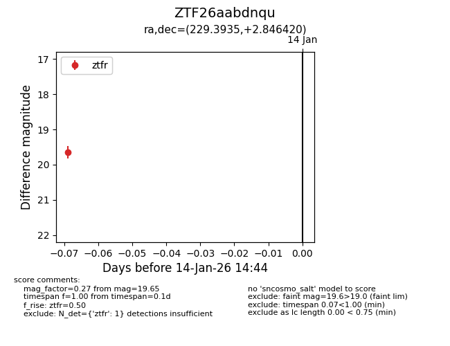
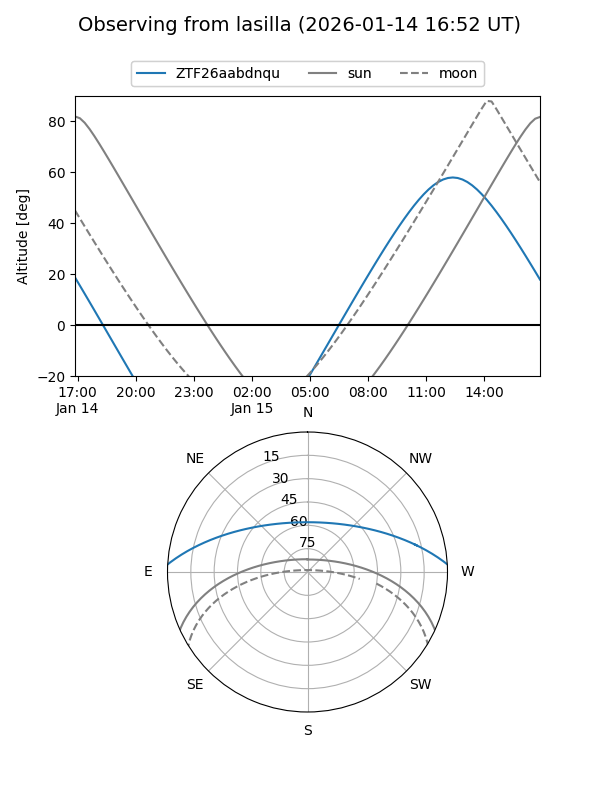
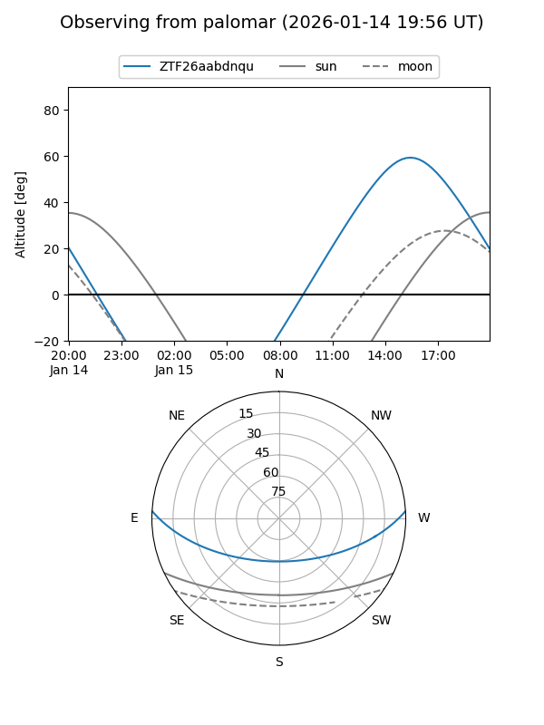

ZTF26aabdnqu
Target ZTF26aabdnqu at 2026-01-14 14:45
Aliases and brokers:
FINK: link
Lasair: link
ALeRCE: link
alt names
ZTF26aabdnqu (ztf,fink_ztf)
Coordinates:
equatorial (ra, dec) = 229.3935,+2.84642
equatorial (HMS+DMS) = 15:17:34.45,+02:50:47.11
galactic (l, b) = (4.5128,+47.46544)
Flags:
Photometry:
last ztfr=19.65
1 ztfr detections
Lightcurve

Visibility


Additional plots